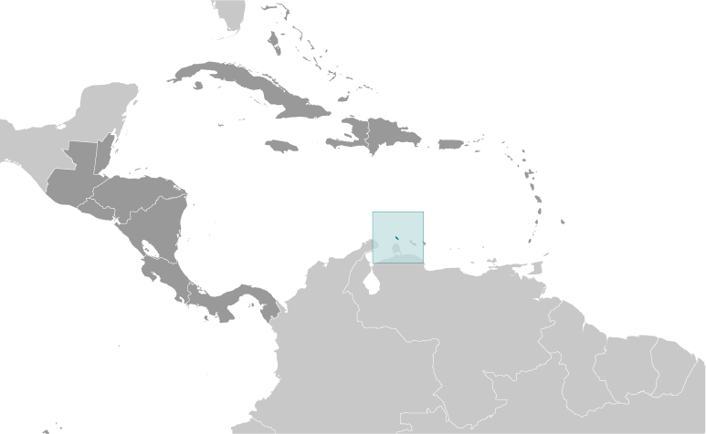
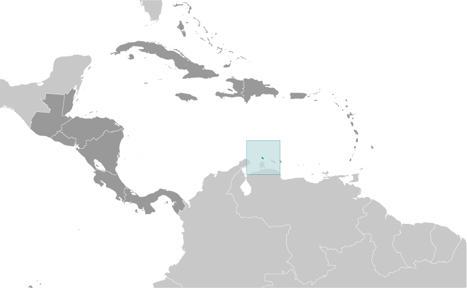

-
Introduction :: Aruba
-
Background:Discovered and claimed for Spain in 1499, Aruba was acquired by the Dutch in 1636. The island's economy has been dominated by three main industries. A 19th century gold rush was followed by prosperity brought on by the opening in 1924 of an oil refinery. The last decades of the 20th century saw a boom in the tourism industry. Aruba seceded from the Netherlands Antilles in 1986 and became a separate, autonomous member of the Kingdom of the Netherlands. Movement toward full independence was halted at Aruba's request in 1990.
-
Geography :: Aruba
-
Location:Caribbean, island in the Caribbean Sea, north of VenezuelaGeographic coordinates:12 30 N, 69 58 WMap references:Central America and the CaribbeanArea:total: 180 sq kmland: 180 sq kmwater: 0 sq kmcountry comparison to the world: 218Area - comparative:slightly larger than Washington, DCLand boundaries:0 kmCoastline:68.5 kmMaritime claims:territorial sea: 12 nmexclusive economic zone: 200 nmClimate:tropical marine; little seasonal temperature variationTerrain:flat with a few hills; scant vegetationElevation:0 m lowest point: Caribbean Sea188 highest point: Ceru JamanotaNatural resources:NEGL; white sandy beaches foster tourismLand use:agricultural land: 11.1% (2014 est.)arable land: 11.1% (2014 est.) / permanent crops: 0% (2014 est.) / permanent pasture: 0% (2014 est.)forest: 2.3% (2014 est.)other: 86.6% (2014 est.)Irrigated land:NAPopulation distribution:most residents live in or around Oranjestad and San Nicolaas; most settlments tend to be located on the less mountainous western side of the islandNatural hazards:hurricanes; lies outside the Caribbean hurricane belt and is rarely threatenedEnvironment - current issues:difficulty in properly disposing of waste produced by large numbers of tourists; waste burning that occurs in the landfill causes air pollution and poses an environmental and health risk; ocean environmental damage due to plastic pollutionGeography - note:a flat, riverless island renowned for its white sand beaches; its tropical climate is moderated by constant trade winds from the Atlantic Ocean; the temperature is almost constant at about 27 degrees Celsius (81 degrees Fahrenheit)
-
People and Society :: Aruba
-
Population:116,576 (July 2018 est.)country comparison to the world: 189Nationality:noun: Aruban(s)adjective: Aruban; DutchEthnic groups:Aruban 66%, Colombian 9.1%, Dutch 4.3%, Dominican 4.1%, Venezuelan 3.2%, Cuacaoan 2.2%, Haitian 1.5%, Peruvian 1.1%, Chinese 1.1%, other 6.2% (2010 est.)note: data represent population by country of birthLanguages:Papiamento (official) (a creole language that is a mixture of Portuguese, Spanish, Dutch, English, and, to a lesser extent, French, as well as elements of African languages and the language of the Arawak) 69.4%, Spanish 13.7%, English (widely spoken) 7.1%, Dutch (official) 6.1%, Chinese 1.5%, other 1.7%, unspecified 0.4% (2010 est.)Religions:Roman Catholic 75.3%, Protestant 4.9% (includes Methodist 0.9%, Adventist 0.9%, Anglican 0.4%, other Protestant 2.7%), Jehovah's Witness 1.7%, other 12%, none 5.5%, unspecified 0.5% (2010 est.)Age structure:0-14 years: 17.61% (male 10,304 /female 10,227)15-24 years: 12.53% (male 7,355 /female 7,253)25-54 years: 41.29% (male 23,187 /female 24,946)55-64 years: 14.51% (male 7,910 /female 9,005)65 years and over: 14.06% (male 6,422 /female 9,967) (2018 est.)population pyramid:
 The World Factbook Field Image ModalCentral America :: Aruba Print
The World Factbook Field Image ModalCentral America :: Aruba Print Image DescriptionThis is the population pyramid for Aruba. A population pyramid illustrates the age and sex structure of a country's population and may provide insights about political and social stability, as well as economic development. The population is distributed along the horizontal axis, with males shown on the left and females on the right. The male and female populations are broken down into 5-year age groups represented as horizontal bars along the vertical axis, with the youngest age groups at the bottom and the oldest at the top. The shape of the population pyramid gradually evolves over time based on fertility, mortality, and international migration trends.
Image DescriptionThis is the population pyramid for Aruba. A population pyramid illustrates the age and sex structure of a country's population and may provide insights about political and social stability, as well as economic development. The population is distributed along the horizontal axis, with males shown on the left and females on the right. The male and female populations are broken down into 5-year age groups represented as horizontal bars along the vertical axis, with the youngest age groups at the bottom and the oldest at the top. The shape of the population pyramid gradually evolves over time based on fertility, mortality, and international migration trends.
For additional information, please see the entry for Population pyramid on the Definitions and Notes page under the References tab.Dependency ratios:total dependency ratio: 44.6 (2015 est.)youth dependency ratio: 27 (2015 est.)elderly dependency ratio: 17.5 (2015 est.)potential support ratio: 5.7 (2015 est.)Median age:total: 39.5 yearsmale: 37.8 yearsfemale: 41.2 years (2018 est.)country comparison to the world: 53Population growth rate:1.24% (2018 est.)country comparison to the world: 88Birth rate:12.3 births/1,000 population (2018 est.)country comparison to the world: 158Death rate:8.5 deaths/1,000 population (2018 est.)country comparison to the world: 76Net migration rate:8.7 migrant(s)/1,000 population (2017 est.)country comparison to the world: 11Population distribution:most residents live in or around Oranjestad and San Nicolaas; most settlments tend to be located on the less mountainous western side of the islandUrbanization:urban population: 43.4% of total population (2018)rate of urbanization: 0.67% annual rate of change (2015-20 est.)Major urban areas - population:30,000 ORANJESTAD (capital) (2018)Sex ratio:at birth: 1.01 male(s)/female (2017 est.)0-14 years: 1.01 male(s)/female (2017 est.)15-24 years: 1.01 male(s)/female (2017 est.)25-54 years: 0.93 male(s)/female (2017 est.)55-64 years: 0.87 male(s)/female (2017 est.)65 years and over: 0.64 male(s)/female (2017 est.)total population: 0.9 male(s)/female (2017 est.)Infant mortality rate:total: 10.4 deaths/1,000 live births (2018 est.)male: 13.6 deaths/1,000 live births (2018 est.)female: 7.2 deaths/1,000 live births (2018 est.)country comparison to the world: 131Life expectancy at birth:total population: 77.1 years (2018 est.)male: 74.1 years (2018 est.)female: 80.3 years (2018 est.)country comparison to the world: 77Total fertility rate:1.83 children born/woman (2018 est.)country comparison to the world: 147Drinking water source:improved: urban: 98.1% of populationrural: 98.1% of populationtotal: 98.1% of populationunimproved: urban: 1.9% of populationrural: 1.9% of populationtotal: 1.9% of population (2015 est.)Sanitation facility access:improved: urban: 97.7% of population (2015 est.)rural: 97.7% of population (2015 est.)total: 97.7% of population (2015 est.)unimproved: urban: 2.3% of population (2015 est.)rural: 2.3% of population (2015 est.)total: 2.3% of population (2015 est.)HIV/AIDS - adult prevalence rate:NAHIV/AIDS - people living with HIV/AIDS:NAHIV/AIDS - deaths:NAMajor infectious diseases:note: active local transmission of Zika virus by Aedes species mosquitoes has been identified in this country (as of August 2016); it poses an important risk (a large number of cases possible) among US citizens if bitten by an infective mosquito; other less common ways to get Zika are through sex, via blood transfusion, or during pregnancy, in which the pregnant woman passes Zika virus to her fetus
Education expenditures:6.5% of GDP (2015)country comparison to the world: 26Literacy:definition: age 15 and over can read and write (2015 est.)total population: 97.5% (2015 est.)male: 97.5% (2015 est.)female: 97.5% (2015 est.)School life expectancy (primary to tertiary education):total: 14 years (2012)male: 13 years (2012)female: 14 years (2012)Unemployment, youth ages 15-24:total: 28.9% (2010 est.)male: 29.9% (2010 est.)female: 27.5% (2010 est.)country comparison to the world: 39 -
Government :: Aruba
-
Country name:conventional long form: noneconventional short form: Arubaetymology: the origin of the island's name is unclear; according to tradition, the name comes from the Spanish phrase "oro huba" (there was gold), but in fact no gold was ever found on the island; another possibility is the native word "oruba," which means "well-situated"Dependency status:constituent country of the Kingdom of the Netherlands; full autonomy in internal affairs obtained in 1986 upon separation from the Netherlands Antilles; Dutch Government responsible for defense and foreign affairsGovernment type:parliamentary democracy (Legislature); part of the Kingdom of the NetherlandsCapital:name: Oranjestadgeographic coordinates: 12 31 N, 70 02 Wtime difference: UTC-4 (1 hour ahead of Washington, DC, during Standard Time)etymology: translates as "orange town" in Dutch; the city is named after William I, Prince of Orange, the first king of the NetherlandsAdministrative divisions:none (part of the Kingdom of the Netherlands)
note: Aruba is one of four constituent countries of the Kingdom of the Netherlands; the other three are the Netherlands, Curacao, and Sint Maarten
Independence:none (part of the Kingdom of the Netherlands)National holiday:National Anthem and Flag Day, 18 March (1976)Constitution:previous 1947, 1955; latest drafted and approved August 1985, enacted 1 January 1986 (regulates governance of Aruba, but is subordinate to the Charter for the Kingdom of the Netherlands); note - in October 2010, following dissolution of the Netherlands Antilles, Aruba became a constituent country within the Kingdom of the Netherlands (2018)Legal system:civil law system based on the Dutch civil codeCitizenship:see the NetherlandsSuffrage:18 years of age; universalJudicial branch:highest courts: Joint Court of Justice of Aruba, Curacao, Sint Maarten, and of Bonaire, Sint Eustatitus and Saba or "Joint Court of Justice" (sits as a 3-judge panel); final appeals heard by the Supreme Court, in The Hague, Netherlandsjudge selection and term of office: Joint Court judges appointed by the monarch for lifesubordinate courts: Courts in First InstanceExecutive branch:chief of state: King WILLEM-ALEXANDER of the Netherlands (since 30 April 2013); represented by Governor General Alfonso BOEKHOUDT (since 1 January 2017)head of government: Prime Minister Evelyn WEVER-CROES (since 17 November 2017)cabinet: Council of Ministers elected by the Legislature (Staten)elections/appointments: the monarchy is hereditary; governor general appointed by the monarch for a 6-year term; prime minister and deputy prime minister indirectly elected by the Staten for 4-year term; election last held on 27 September 2013 (next to be held by September 2017)election results: Evelyn WEVER-CROES (MEP) elected prime minister; percent of legislative vote - NALegislative branch:description: unicameral Legislature or Staten (21 seats; members directly elected in a single nationwide constituency by proportional representation vote; members serve 4-year terms)elections: last held on 22 September 2017 (next to be held in September 2021)election results: percent of vote by party AVP 39.8%, MEP 37.6%, POR 9.4%, RED 7.1%, other 6.1%; seats by party - AVP 9, MEP 9, POR 2, RED 1; composition as of October 2018 - men 14, women 7, percent of women 33.3%Political parties and leaders:Aruban People's Party or AVP [Michiel "Mike" EMAN]
Democratic Electoral Network or RED [L.R. CROES]
People's Electoral Movement Party or MEP [Evelyn WEVER-CROES]
Pueblo Orguyoso y Respeta or POR [O.E. ODUBER]
Real Democracy or PDR [Andin BIKKER]International organization participation:Caricom (observer), FATF, ILO, IMF, Interpol, IOC, ITUC (NGOs), UNESCO (associate), UNWTO (associate), UPUDiplomatic representation in the US:none (represented by the Kingdom of the Netherlands) note - there is a Minister Plenipotentiary for Aruba, Rendolf "Andy" LEE, at the Embassy of the Kingdom of the NetherlandsDiplomatic representation from the US:the US does not have an embassy in Aruba; the Consul General to Curacao is accredited to ArubaFlag description:blue, with two narrow, horizontal, yellow stripes across the lower portion and a red, four-pointed star outlined in white in the upper hoist-side corner; the star represents Aruba and its red soil and white beaches, its four points the four major languages (Papiamento, Dutch, Spanish, English) as well as the four points of a compass, to indicate that its inhabitants come from all over the world; the blue symbolizes Caribbean waters and skies; the stripes represent the island's two main "industries": the flow of tourists to the sun-drenched beaches and the flow of minerals from the earthNational symbol(s):Hooiberg (Haystack) Hill; national colors: blue, yellow, red, whiteNational anthem:name: "Aruba Deshi Tera" (Aruba Precious Country)lyrics/music: Juan Chabaya 'Padu' LAMPE/Rufo Inocencio WEVERnote: local anthem adopted 1986; as part of the Kingdom of the Netherlands, "Het Wilhelmus" is official (see Netherlands)
-
Economy :: Aruba
-
Economy - overview:
Tourism, petroleum bunkering, hospitality, and financial and business services are the mainstays of the small open Aruban economy.
Tourism accounts for a majority of economic activity; as of 2017, over 2 million tourists visited Aruba annually, with the large majority (80-85%) of those from the US. The rapid growth of the tourism sector has resulted in a substantial expansion of other activities. Construction continues to boom, especially in the hospitality sector.
Aruba is heavily dependent on imports and is making efforts to expand exports to improve its trade balance. Almost all consumer and capital goods are imported, with the US, the Netherlands, and Panama being the major suppliers.
In 2016, Citgo Petroleum Corporation, an indirect wholly owned subsidiary of Petroleos de Venezuela SA, and the Government of Aruba signed an agreement to restart Valero Energy Corp.'s former 235,000-b/d refinery. Tourism and related industries have continued to grow, and the Aruban Government is working to attract more diverse industries. Aruba's banking sector continues to be a strong sector; unemployment has significantly decreased.
GDP (purchasing power parity):$4.158 billion (2017 est.)$4.107 billion (2016 est.)$4.112 billion (2015 est.)country comparison to the world: 180GDP (official exchange rate):$2.7 billion (2009 est.) (2017 est.)GDP - real growth rate:1.2% (2017 est.)-0.1% (2016 est.)-0.4% (2015 est.)country comparison to the world: 180GDP - per capita (PPP):$37,500 (2017 est.)$37,300 (2016 est.)$37,700 (2015 est.)country comparison to the world: 51Gross national saving:17% of GDP (2017 est.)17.2% of GDP (2016 est.)15.5% of GDP (2015 est.)country comparison to the world: 120GDP - composition, by end use:household consumption: 60.3% (2014 est.)government consumption: 25.3% (2015 est.)investment in fixed capital: 22.3% (2014 est.)investment in inventories: 0% (2015 est.)exports of goods and services: 70.5% (2015 est.)imports of goods and services: -76.6% (2015 est.)GDP - composition, by sector of origin:agriculture: 0.4% (2002 est.)industry: 33.3% (2002 est.)services: 66.3% (2002 est.)Agriculture - products:aloes; livestock; fishIndustries:tourism, petroleum transshipment facilities, bankingIndustrial production growth rate:NALabor force:51,610 (2007 est.)note: of the 51,610 workers aged 15 and over in the labor force, 32,252 were born in Aruba and 19,353 came from abroad; foreign workers are 38% of the employed population
country comparison to the world: 191Labor force - by occupation:agriculture: NAindustry: NAservices: NAnote: most employment is in wholesale and retail trade, followed by hotels and restaurants
Unemployment rate:7.7% (2016 est.)country comparison to the world: 113Population below poverty line:NABudget:revenues: 681.6 million (2017 est.)expenditures: 755.5 million (2017 est.)Taxes and other revenues:25.2% (of GDP) (2017 est.)country comparison to the world: 118Budget surplus (+) or deficit (-):-2.7% (of GDP) (2017 est.)country comparison to the world: 118Public debt:86% of GDP (2017 est.)84.7% of GDP (2016 est.)country comparison to the world: 31Fiscal year:calendar yearInflation rate (consumer prices):-0.5% (2017 est.)-0.9% (2016 est.)country comparison to the world: 6Central bank discount rate:1% (31 December 2010)3% (31 December 2009)country comparison to the world: 132Commercial bank prime lending rate:7% (31 December 2017 est.)7.83% (31 December 2016 est.)country comparison to the world: 118Stock of narrow money:$0 (31 December 2017 est.)$1.257 billion (31 December 2016 est.)country comparison to the world: 194Stock of broad money:$0 (31 December 2017 est.)$1.257 billion (31 December 2016 est.)country comparison to the world: 197Stock of domestic credit:$1.848 billion (31 December 2017 est.)$1.848 billion (31 December 2016 est.)country comparison to the world: 156Current account balance:$22 million (2017 est.)$133 million (2016 est.)country comparison to the world: 60Exports:$137.1 million (2017 est.)$283.1 million (2016 est.)country comparison to the world: 193Exports - partners:US 20.2%, Colombia 17.6%, Venezuela 13%, Netherlands 9.1%, Thailand 8.4%, Panama 4.8% (2017)Exports - commodities:live animals and animal products, art and collectibles, machinery and electrical equipment, transport equipmentImports:$1.122 billion (2017 est.)$1.142 billion (2016 est.)country comparison to the world: 181Imports - commodities:machinery and electrical equipment, refined oil for bunkering and reexport, chemicals; foodstuffsImports - partners:US 53.7%, Netherlands 13.1% (2017)Reserves of foreign exchange and gold:$921.8 million (31 December 2017 est.)$828 million (31 December 2015 est.)country comparison to the world: 134Debt - external:$693.2 million (31 December 2014 est.)$666.4 million (31 December 2013 est.)country comparison to the world: 173Exchange rates:Aruban guilders/florins per US dollar -1.79 (2017 est.)1.79 (2016 est.)1.79 (2015 est.)1.79 (2014 est.)1.79 (2013 est.) -
Energy :: Aruba
-
Electricity access:population without electricity: 11,364 (2012)electrification - total population: 91% (2012)electrification - urban areas: 100% (2012)electrification - rural areas: 80% (2012)Electricity - production:939 million kWh (2016 est.)country comparison to the world: 153Electricity - consumption:873.3 million kWh (2016 est.)country comparison to the world: 158Electricity - exports:0 kWh (2016 est.)country comparison to the world: 100Electricity - imports:0 kWh (2016 est.)country comparison to the world: 121Electricity - installed generating capacity:296,000 kW (2016 est.)country comparison to the world: 159Electricity - from fossil fuels:87% of total installed capacity (2016 est.)country comparison to the world: 61Electricity - from nuclear fuels:0% of total installed capacity (2017 est.)country comparison to the world: 39Electricity - from hydroelectric plants:0% of total installed capacity (2017 est.)country comparison to the world: 154Electricity - from other renewable sources:13% of total installed capacity (2017 est.)country comparison to the world: 66Crude oil - production:0 bbl/day (2017 est.)country comparison to the world: 106Crude oil - exports:0 bbl/day (2015 est.)country comparison to the world: 87Crude oil - imports:0 bbl/day (2015 est.)country comparison to the world: 91Crude oil - proved reserves:0 bbl (1 January 2018 est.)country comparison to the world: 104Refined petroleum products - production:0 bbl/day (2015 est.)country comparison to the world: 115Refined petroleum products - consumption:8,000 bbl/day (2016 est.)country comparison to the world: 163Refined petroleum products - exports:0 bbl/day (2015 est.)country comparison to the world: 127Refined petroleum products - imports:7,891 bbl/day (2015 est.)country comparison to the world: 153Natural gas - production:1 cu m (2017 est.)country comparison to the world: 96Natural gas - consumption:1 cu m (2017 est.)country comparison to the world: 116Natural gas - exports:1 cu m (2017 est.)country comparison to the world: 56Natural gas - imports:1 cu m (2017 est.)country comparison to the world: 80Natural gas - proved reserves:0 cu m (1 January 2014 est.)country comparison to the world: 107Carbon dioxide emissions from consumption of energy:1.266 million Mt (2017 est.)country comparison to the world: 162
-
Communications :: Aruba
-
Telephones - fixed lines:total subscriptions: 35,000 (July 2016 est.)subscriptions per 100 inhabitants: 31 (July 2016 est.)country comparison to the world: 167Telephones - mobile cellular:total subscriptions: 141,000 (July 2016 est.)subscriptions per 100 inhabitants: 126 (July 2016 est.)country comparison to the world: 187Telephone system:general assessment: modern fully automatic telecommunications system; increased competition through privatization has increased mobile-cellular teledensity; three mobile-cellular service providers are now licensed; MNO (mobile network operator) launches island-wide LTE services; introduction of MNP (mobile number potability) (2017)domestic: ongoing changes in regulations and competion improve teledensity; 31 per 100 fixed-line, 126 per 100 mobile-cellular (2017)international: country code - 297; landing site for the PAN-AM submarine telecommunications cable system that extends from the US Virgin Islands through Aruba to Venezuela, Colombia, Panama, and the west coast of South America; extensive interisland microwave radio relay links (2016)Broadcast media:2 commercial TV stations; cable TV subscription service provides access to foreign channels; about 19 commercial radio stations broadcast (2017)Internet country code:.awInternet users:total: 106,309 (July 2016 est.)percent of population: 93.5% (July 2016 est.)country comparison to the world: 177
-
Transportation :: Aruba
-
National air transport system:number of registered air carriers: 3 (2015)inventory of registered aircraft operated by air carriers: 19 (2015)annual passenger traffic on registered air carriers: 2,120,578 (2015)annual freight traffic on registered air carriers: 0 mt-km (2015)Civil aircraft registration country code prefix:P4 (2016)Airports:1 (2013)country comparison to the world: 212Airports - with paved runways:total: 1 (2017)2,438 to 3,047 m: 1 (2017)Ports and terminals:major seaport(s): Barcadera, Oranjestadoil terminal(s): Sint Nicolaascruise port(s): Oranjestad
-
Military and Security :: Aruba
-
Military branches:no regular military forces (2011)Military - note:defense is the responsibility of the Netherlands; the Aruba security services focus on organized crime and terrorism
-
Transnational Issues :: Aruba
-
Disputes - international:noneIllicit drugs:transit point for US- and Europe-bound narcotics with some accompanying money-laundering activity; relatively high percentage of population consumes cocaine
Central America ::
Aruba